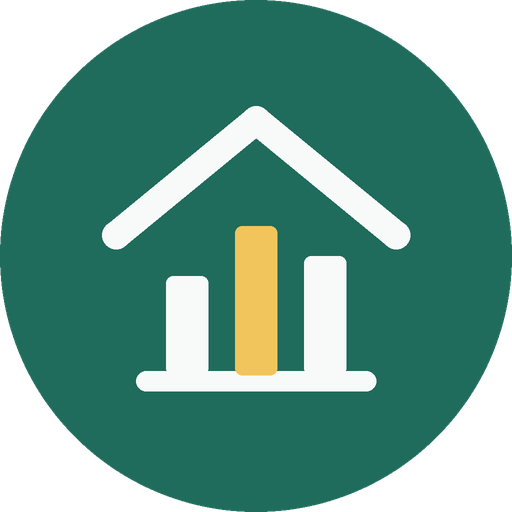

실거래가로 보는 동네 이야기개인정보처리방침
시행일: 2026년 11월 6일
이 방침은 유튜브 채널 「실거래가로 보는 동네 이야기」의 운영자가 쓰는 개인용 프로그램 realestate-stories(이하 “프로그램”)에 적용됩니다. 프로그램은 운영자 본인이 자기 컴퓨터에서 실행하며, 운영자 본인의 Google 계정과 유튜브 채널에만 접근합니다.
1. 프로그램이 접근하는 정보
프로그램은 운영자가 Google 로그인 화면에서 직접 허용한 범위에서만 YouTube API 서비스를 사용합니다.
- 영상 업로드와 관리: 운영자가 만든 영상을 운영자의 채널에 올리고, 제목·설명·썸네일·공개 예약·공개 상태를 정합니다.
- 채널 통계 읽기: 운영자 채널의 조회수, 시청 시간 같은 집계 통계를 읽어 운영자 본인의 보고서를 만듭니다.
프로그램은 시청자 개인의 정보, 댓글 작성자 정보, 연락처, 결제 정보 등을 모으지 않습니다. 영상에 쓰는 실거래 자료에도 거래 당사자의 개인 정보는 들어 있지 않으며, 중개업소 소재지·매도인·매수인 구분 같은 항목은 처음부터 저장하지 않습니다.
2. 정보를 쓰는 방식과 보관
- Google이 발급한 접근 권한(토큰)은 운영자 컴퓨터의 비공개 폴더에만 저장되며, 인터넷에 올리거나 다른 사람과 공유하지 않습니다.
- 채널 통계는 운영자 본인의 실험 보고서를 만드는 데만 쓰입니다.
- 정보를 판매하거나 광고에 쓰거나 제3자에게 넘기지 않습니다.
3. 삭제
- 운영자가 권한을 철회하거나 채널 운영을 마치면, 운영자 컴퓨터에 저장된 접근 권한(토큰)을 지웁니다. 철회하면 Google 쪽 토큰도 즉시 무효가 됩니다.
- YouTube API로 받은 채널 통계는 보고서를 만드는 데 필요한 동안만 보관하고, 실험이 끝나거나 운영자가 요청하면 30일 안에 지웁니다. YouTube API 서비스 정책에 따라 저장한 API 데이터는 30일마다 새로 받거나 지웁니다.
- 이 프로그램은 운영자 외의 사람에 관한 정보를 저장하지 않으므로, 다른 사람의 정보를 지울 일은 생기지 않습니다. 궁금한 점은 아래 문의 방법으로 남겨 주세요.
4. 권한 철회
Google 계정의 서드 파티 앱 및 서비스 연결 페이지에서 언제든 프로그램의 접근 권한을 해제할 수 있습니다. 해제하면 프로그램은 더 이상 계정에 접근할 수 없습니다.
5. YouTube API 서비스와 Google
프로그램은 YouTube API 서비스를 사용합니다. 프로그램을 사용하면 YouTube 서비스 약관에 동의하는 것이며, Google의 정보 처리에는 Google 개인정보처리방침이 적용됩니다.
6. 방침의 변경과 문의
방침이 바뀌면 이 페이지에 시행일과 함께 알립니다. 문의는 이 페이지 저장소의 이슈로 남겨 주세요.
English summary
realestate-stories is a personal tool used only by the owner of the YouTube channel “실거래가로 보는 동네 이야기” on the owner’s own computer. It uses YouTube API Services, with the owner’s consent, to upload and manage videos on the owner’s channel and to read the channel’s aggregate analytics for the owner’s own reports. Tokens are stored locally and never shared. No data from viewers or other users is collected, sold or shared. Stored tokens are deleted when access is revoked or the channel is closed; API data (channel analytics) is refreshed or deleted at least every 30 days and deleted within 30 days on request. Access can be revoked at any time at myaccount.google.com/permissions. Use of the tool is subject to the YouTube Terms of Service and the Google Privacy Policy.